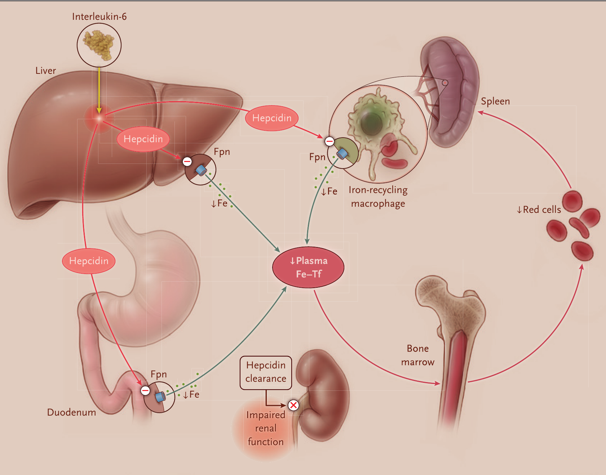
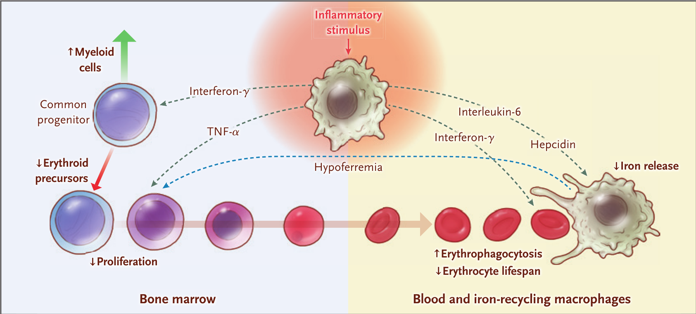

本ページで使用する略語一覧
| AoI | Anemia of Inflammation — 慢性炎症に伴う貧血（＝慢性疾患の貧血 anemia of chronic disease） |
| IDA | Iron-Deficiency Anemia — 鉄欠乏性貧血 |
| Hb | Hemoglobin — ヘモグロビン |
| MCV | Mean Corpuscular Volume — 平均赤血球容積 |
| MCHC | Mean Corpuscular Hemoglobin Concentration — 平均赤血球ヘモグロビン濃度 |
| ヘプシジン | Hepcidin — 肝細胞が産生する鉄制御ホルモン（急性期蛋白） |
| フェロポーチン | Ferroportin（Fpn）— 細胞内鉄を血漿へ排出する唯一の輸送体（ヘプシジンの受容体） |
| Fe–Tf | Iron–Transferrin — 鉄–トランスフェリン複合体（血漿鉄） |
| TSAT | Transferrin Saturation — トランスフェリン飽和度 |
| sTfR | Soluble Transferrin Receptor — 可溶性トランスフェリン受容体 |
| NTBI | Non-Transferrin-Bound Iron — 非トランスフェリン結合鉄（微生物の病原性を高める鉄種） |
| TNF-α | Tumor Necrosis Factor α — 腫瘍壊死因子α |
| IL | Interleukin — インターロイキン（IL-1・IL-6 など） |
| IFN-γ | Interferon γ — インターフェロンγ |
| JAK2–STAT3 | Janus Kinase 2–Signal Transducer and Activator of Transcription 3 — IL-6 がヘプシジン転写を上げるシグナル経路 |
| BFU-E | Burst-Forming Unit, Erythroid — 赤芽球バースト形成単位（早期赤芽球前駆細胞） |
| CFU-E | Colony-Forming Unit, Erythroid — 赤芽球コロニー形成単位（後期赤芽球前駆細胞） |
| PU.1 / GATA1 | 転写因子。PU.1＝骨髄系分化を促進／GATA1＝赤芽球系分化を促進（相互拮抗） |
| EPO | Erythropoietin — エリスロポエチン（赤血球造血の主要ホルモン） |
| TGF-β | Transforming Growth Factor β — トランスフォーミング増殖因子β（アクチビン様リガンド） |
| ESR / CRP | 赤血球沈降速度 / C反応性蛋白 — 全身性炎症の指標 |
| CKD / ESRD | Chronic Kidney Disease / End-Stage Renal Disease — 慢性腎臓病 / 末期腎不全 |
| BMP | Bone Morphogenetic Protein — 骨形成蛋白（ヘプシジン合成を刺激） |
| ACVR1 | Activin A Receptor 1 — アクチビンA受容体1（BMP受容体） |
| HIF-PHD | Hypoxia-Inducible Factor Prolyl Hydroxylase — 低酸素誘導因子プロリル水酸化酵素（阻害薬がEPO産生を促進） |
SECTION 1 慢性炎症に伴う貧血とは — 鉄分布の異常
定義
慢性炎症に伴う貧血（Anemia of Inflammation、慢性疾患の貧血とも呼ばれる）は、全身性炎症を背景に赤血球産生の低下によって生じる軽度〜中等度の貧血（Hb 7〜12 g/dL）で、60年以上前から認識されてきた。赤血球産生の低下に加え、赤血球寿命の軽度短縮を伴う。
鉄欠乏性貧血（IDA）と同様に血清鉄が低い（低鉄血症）のが特徴だが、IDAと異なり鉄は骨髄・脾臓・肝臓のマクロファージ内に保たれている。したがって本症は本質的に「鉄の分布異常」の病態である。老化赤血球を再利用するマクロファージに鉄が貯留する一方、血漿への鉄供給が制限される。
赤血球形態は、IDAでは小球性（低MCV）・低色素性（低MCHC）になりやすいのに対し、慢性炎症に伴う貧血では多くが正球性・正色素性である。ただし鉄欠乏が併存・合併する一部の患者では小球性・低色素性となる。
なぜ「慢性疾患」と結びつくのか — 赤血球寿命という緩衝
ヒト赤血球の正常寿命は約120日と長い。炎症によって寿命がいくらか短縮しても、臨床的に意味のある赤血球数の低下は、基礎となる炎症性疾患の発症から数週〜数か月経たないと通常は現れない。この時間差が、本症が慢性疾患と結びついて発症する理由である。
SECTION 2 疫学と基礎疾患 — どの病態で起こるか
世界の2大貧血
慢性炎症に伴う貧血と鉄欠乏性貧血は、世界で最も多い2つの貧血である。栄養欠乏と感染症の頻度が高い開発途上国では、両者がしばしば併存する。
医療と鉄に富む栄養へのアクセスが良好な集団では、慢性炎症に伴う貧血は古典的に以下の慢性全身性炎症性疾患と関連する。
| カテゴリー | 代表的な病態 |
|---|---|
| 自己免疫・リウマチ性 | 関節リウマチ、全身性エリテマトーデス、炎症性腸疾患（IBD） |
| 慢性感染症 | 結核、後天性免疫不全症候群（AIDS） |
| サイトカイン産生を伴う血液腫瘍 | ホジキンリンパ腫、一部の非ホジキンリンパ腫 |
| 一部の固形腫瘍 | 卵巣癌、肺癌 |
| 全身性炎症を伴う慢性臓器疾患 | 慢性腎臓病（CKD）、慢性心不全、慢性閉塞性肺疾患（COPD）、嚢胞性線維症 |
近年では、全身性炎症をもつ多くの患者で、慢性炎症に伴う貧血が貧血の主因または一因として認識されることが増えている。
SUMMARY 第1章のキーメッセージ
SECTION 1 炎症 — サイトカインが造血を変える
炎症の認識からサイトカイン産生まで
炎症は、組織に侵入した感染性・傷害性の因子を封じ込め中和するために多細胞生物が進化させた一連の生物学的機構である。こうした因子は、宿主防御細胞の膜・細胞質・細胞外液にある分子センサー（toll様受容体、Nod様受容体、マンノース結合レクチンなど）によって最初に認識される。感染性・傷害性因子に特徴的な分子パターンに接触するとこれらのセンサーが活性化し、最終的に臨床的に検出可能な炎症の所見を生むメディエーターを生成する。
炎症は、自己免疫や悪性疾患における免疫の乱れ（関節リウマチ・IBD・ホジキンリンパ腫など）の結果としても生じる。炎症発症後の最初の数時間以内に、TNF-α・IL-1・IL-6・IFN-γなどのサイトカインが炎症細胞から産生される。これらは赤血球造血を直接・間接に制限し、赤血球寿命を短縮させる。
SECTION 2 鉄代謝 — ヘプシジン–フェロポーチン軸（Fig. 1）
正常の鉄ホメオスタシス
炎症がなく栄養としての鉄供給が十分なとき、全身の鉄ホメオスタシスは血漿鉄を10〜30 μM、全身鉄貯蔵を0.3〜1 gの範囲に維持する（下限は妊娠可能年齢の女性に典型的）。鉄ホメオスタシスの中心機構は、肝細胞が産生する鉄制御ホルモンヘプシジンと、その受容体かつ唯一の細胞鉄排出体であるフェロポーチンとの相互作用である。
ヘプシジンはフェロポーチンの鉄排出活性を抑制し、①鉄を吸収する十二指腸の腸細胞、②老化赤血球の鉄を再利用するマクロファージ、③鉄を貯蔵する肝細胞、から血漿への鉄の移行を制御する。血漿鉄は輸送蛋白トランスフェリンに結合し、その大半は骨髄の赤芽球へ届けられヘム・ヘモグロビン合成に使われる。

炎症がヘプシジンを上げる — IL-6 と JAK2–STAT3
基礎的なヘプシジン合成は、鉄貯蔵と血漿鉄の両方からのフィードバックで制御される。肝臓の鉄センサー（血漿の二鉄トランスフェリンを検出するトランスフェリン受容体1・2と、肝貯蔵鉄を検出するセンサー）が、骨形成蛋白（BMP）受容体を介してヘプシジン合成を調節し、鉄が豊富なとき合成を増やし鉄欠乏時に減らす。
炎症はヘプシジン合成を大きく増加させ、これが本症の病態形成に重要となる。増加は主に（ただし排他的ではなく）IL-6によるもので、IL-6 はJAK2–STAT3経路を介して肝細胞のヘプシジン遺伝子転写を増やす。肥満のような比較的軽度の全身性炎症状態でも血清ヘプシジンの小さな（だが臨床的に意味のある）上昇が生じ、敗血症では健常人と比べ血清ヘプシジンが10倍超に上昇しうる。
ヘプシジン上昇
SECTION 3 赤血球造血 — 系列選択と鉄依存性
前駆細胞の系列選択：PU.1 と GATA1
赤血球は骨髄の造血幹細胞から、徐々に系列が限定され増殖能が低下する段階を経て産生される。一部の早期前駆細胞は骨髄系と赤芽球/巨核球系の両方への分化能をもち、相互に拮抗する2つの転写因子—骨髄系分化を促す PU.1と赤芽球系分化を促す GATA1—の比によって進路が偏る。この両者の比は炎症によって影響を受ける。
赤芽球系に最初に完全にコミットした前駆細胞が BFU-E（赤芽球バースト形成単位）で、より分化が進んだのが CFU-E（赤芽球コロニー形成単位）である。CFU-E から前赤芽球が生じ、4〜5回の分裂を経て成熟赤芽球となり、脱核して網赤血球、そして両凹型の赤血球になる。
CFU-E と早期赤芽球の生存はEPOにより決まり、赤芽球の分化・分裂はEPOと鉄の濃度、さらにTGF-βスーパーファミリーのアクチビン様メンバーにより制御される。赤血球造血は血漿の二鉄トランスフェリンの濃度に依存しており、これが鉄制限性貧血の病態に関わる。
SUMMARY 第2章のキーメッセージ
SECTION 1 進化的視点 — 宿主防御を造血より優先する（Fig. 2）
なぜ体は貧血を「選ぶ」のか
感染や傷害に対して、赤血球造血のような恒常的（housekeeping）過程よりも宿主防御過程を優先することは、有益な進化戦略であり、慢性炎症に伴う貧血を理解する有用な枠組みを与える。低鉄血症と白血球の産生・活性化の亢進は、赤血球の産生と生存を犠牲にして宿主防御に寄与する。
白血球産生の増加と低鉄血症が赤芽球前駆細胞の数を減らし、マクロファージの活性化が赤血球寿命を短縮する。赤血球の長い寿命は、ほとんどの急性感染の間、造血低下の影響を緩衝する。慢性の感染・炎症では、赤血球の破壊と低下した産生が釣り合う貧血の定常状態へとしばしば落ち着く。

SECTION 2 低鉄血症 — 数時間で起こる宿主防御
低鉄血症は抗菌戦略でもある
低鉄血症は、感染やその他の炎症イベントの最初の数時間以内に生じる。血漿鉄とトランスフェリン飽和度の低下は、非トランスフェリン結合鉄（NTBI）の生成を防ぐ役割をもちうる。NTBI はグラム陰性菌（おそらく他の微生物も）の病原性を強める強力な刺激として認識されている。
血漿などの細胞外液（細胞外細菌が侵入する区画）に含まれる鉄はわずか2〜3 mgで、全身鉄3〜4 gと比べて極めて少なく、数時間ごとに入れ替わる。そのため鉄の供給・需要が変わると血漿鉄は不安定になりやすい。IL-6 で刺激された高濃度の循環ヘプシジンが細胞からの鉄排出を抑え、腸での鉄吸収と脾・肝の赤血球再利用マクロファージからの鉄放出をともに減らす。
低鉄血症が造血を止める「設定点」
炎症性の低鉄血症は、全身性鉄欠乏の低鉄血症と同様に赤血球造血を抑制する。鉄は単にヘモグロビン合成の化学量論的な律速（1分子に鉄4原子）になるだけではない。むしろ造血は、トランスフェリン飽和度15〜20%という比較的高い設定点で低鉄血症により抑制される。これは、血漿鉄低下の影響を受けにくい他の組織（筋肉・中枢神経・非赤芽球性骨髄など）への鉄供給を守るように働くと考えられる。
SECTION 3 骨髄リプログラミングと EPO 抵抗性
骨髄が骨髄系へ傾く
白血球増多と骨髄での白血球産生増加は炎症の早期反応で、骨髄では骨髄系前駆細胞の増加（骨髄系/赤芽球系比 >4:1）として現れる。このリプログラミングは炎症性サイトカイン（最もよく研究された TNF-α と IFN-γ）が転写因子 PU.1 を活性化し、赤血球造血を犠牲に骨髄球系・リンパ球系を促すことで起こる。BFU-E がより分化した赤芽球を生む能力も炎症性サイトカインで抑制される。
EPO の産生抑制と EPO 抵抗性
もう一つのリプログラミングは、主要な赤血球造血ホルモンであるEPO の炎症性抑制である。全身性炎症をもつ患者の一部では、同程度の鉄欠乏性貧血の患者と比べて血清 EPO 値が低下している。腎間質のEPO産生細胞への炎症の影響に依存する機序は、マウスモデルで支持されている。
さらに、赤芽球前駆細胞のEPOへの反応性も炎症で障害される。炎症を伴う末期腎不全患者で外因性EPO必要量が増えることがその表れである。このEPO抵抗性は、一部、赤芽球前駆細胞上のEPO受容体数の減少を介する。これは低鉄血症の最近知られた作用で、前駆細胞の増殖能を低下させる。
前駆細胞比
抑制（一部の患者）
→EPO抵抗性
SECTION 4 赤血球寿命の短縮
寿命は約25%短縮し、約90日になる
慢性炎症に伴う貧血の患者では、赤血球寿命が約25%短縮して約90日になることが一貫して示されてきた（当初は放射性鉄トレーサー、現在はヘム分解産物である呼気一酸化炭素の測定による）。赤血球寿命の短縮は貧血のない炎症患者の多くでも見られるため、赤血球造血による代償が破綻したときにのみ貧血が顕在化する。
基礎疾患が多様なため、赤血球破壊の亢進には複数の因子が寄与すると考えられる。マクロファージの活性化（赤血球老化の認識閾値に影響しうる）や、傍観者的な炎症性傷害への赤血球の曝露などである。活性化マクロファージによる血球貪食が貧血の主因となる病態は「消費性（consumptive）の慢性炎症に伴う貧血」と呼ばれる。赤血球は抗体・補体の沈着や微小血管のフィブリン索による傷害も受けうる。
SUMMARY 第3章のキーメッセージ
SECTION 1 診断基準 — 3つの条件
症状と診断の枠組み
軽〜中等度貧血の症状は倦怠感・運動耐容能低下・労作時呼吸困難だが、慢性の全身性炎症そのものの影響と区別しにくい。慢性炎症に伴う貧血は、次の3条件を満たす患者で診断される。
正球性・正色素性貧血：MCV正常・MCHC正常
全身性炎症の所見：赤血球沈降速度（ESR）またはCRPの上昇
全身性鉄欠乏によらない鉄制限：TSAT低値（<20%）＋高フェリチン（>100 μg/L）
SECTION 2 バイオマーカー比較 — 鉄欠乏 vs 炎症（Table 1）
鉄欠乏と慢性炎症に伴う貧血の鑑別指標
両者を区別するバイオマーカーを以下に示す。両者が併存する場合は中間的な値が予想される。実際には、これらの指標は最も必要なとき（炎症性貧血に鉄欠乏が合併したとき）に最も役立たない、という難しさがある。
| バイオマーカー | 鉄欠乏（IDA） | 慢性炎症に伴う貧血 |
|---|---|---|
| 平均赤血球容積（MCV） | 低い | 正常 |
| 平均赤血球ヘモグロビン量（MCH） | 低い | 正常 |
| 網赤血球ヘモグロビン含量 | 低い | 正常 |
| 低色素性赤血球の割合 | 高い | 低い |
| 血清トランスフェリン | 高い | 低い |
| 血清トランスフェリン受容体（sTfR） | 高い | 正常 |
| 血清フェリチン | 低い | 高い |
| 血清ヘプシジン | 低い | 高い |
＊鉄欠乏と慢性炎症に伴う貧血が併存する場合は中間値となる。（Table 1 より）
SECTION 3 鉄欠乏合併の検出 — 実践的アプローチ
骨髄染色鉄に頼らない実務
慢性炎症に伴う貧血で鉄欠乏の寄与を評価する一般化可能なアルゴリズムが作りにくい理由は、①基礎疾患の多様性、②炎症成分と鉄欠乏成分の相対的重症度のばらつき、③これら指標を単独・組合せで評価する標準検査がないこと、にある。歴史的には骨髄の染色可能鉄の有無が鉄欠乏診断の基準とされたが、侵襲的でサンプリングや病理判定のばらつきがあり、大規模研究には不適である。
実践的な解決策は、あらゆる潜在的出血（多くは消化管）と、処置・採血による医原性失血の検出・診断に注力することである。そのうえで、鉄補充の緊急性や過去の鉄療法の副作用に応じて、経口または静注鉄の治療的トライアルを検討する。鉄が基礎疾患の経過と患者の全般的な状態に及ぼす影響を考慮して判断する。
SUMMARY 第4章のキーメッセージ
SECTION 1 基礎疾患の治療が第一
原因の炎症を治すと貧血も改善する
慢性炎症に伴う貧血を起こす感染・炎症過程を標的とした治療は、貧血を改善するだけでなく原疾患による多くの症状・障害も改善する。そのため、貧血のみを狙う治療よりも、患者にとって意味のある改善をもたらしやすい。実際、適切な原疾患治療で貧血は著明かつ速やかに改善しうる。
| 病態 | 治療 | 貧血の反応 |
|---|---|---|
| キャッスルマン病 | 抗IL-6抗体 | 速やかに改善 |
| 巨細胞性動脈炎 | 糖質コルチコイド | 速やかに改善 |
| 関節リウマチ | 抗IL-6 または 抗TNF-α療法 | 2週間で有意なHb上昇 |
| 結核（貧血合併） | 抗菌薬 | 1か月で約1/3、2か月で約半数が完全消失 |
SECTION 2 鉄補充 — 経口より静注、そして「半量」
経口鉄は吸収が落ちる
経口鉄の吸収は全身性炎症を伴う疾患でしばしば障害される（軽度炎症では鉄欠乏による吸収促進効果が打ち消す）。そのため慢性炎症に伴う貧血では経口より静注（IV）鉄が確実で、経口では鉄欠乏の是正が遅い。一方、静注鉄製剤は安全に投与できるようになり、鉄欠乏が混在する慢性炎症に伴う貧血に非常に有効である。
静注鉄の「半量補正」アプローチ
両病態を併せもつ患者への静注鉄の一つの方法は、鉄欠乏のみが原因と仮定して貧血を完全是正するのに要する鉄量を見積もり、その半量を投与することである。覚えやすい簡便式は次のとおり。
※ kg は ×2.2 でポンドに換算。算出値の半量を投与する。
静注鉄では部分的なHb是正が通常4週間以内に起こり8週間で頭打ちになるが、患者はもっと早く自覚的改善に気づくことがある。単回治療では現行の静注鉄製剤はいずれも同等に安全・有効なので、製剤・投与スケジュールは患者の利便性と総コストで選ぶ。
半分を投与
起こる目安
なる目安
SECTION 3 EPO 製剤 — CKD を中心に、利益とリスクを天秤に
エビデンスの大半は CKD 由来
慢性炎症に伴う貧血に特異的な治療として、EPO誘導体（静注鉄の併用あり/なし）が、主にCKD患者で開発・試験されてきた。こうした患者では炎症の影響に加え、腎でのEPO産生増加が障害されていることが多い。EPO誘導体と静注鉄の併用は、炎症の鉄制限作用と内因性EPO抵抗性の両方に対抗すると期待される。
透析不要のCKD患者でのEPO誘導体治療のシステマティックレビューでは、血中Hbの著明な改善と貧血関連症状の一部改善が示された。しかし腎代替療法を要する病勢進行のリスクには測定可能な効果がなかった。
CKDのない患者でのこれら治療の使用はごく限られた検討しかなく、疾患特異的なリスクと利益は不確実である。CKDのない患者では、患者にとって意味のある利益と、透析非依存CKDの研究で定義された記録済みリスクを慎重に天秤にかけ、個別に判断すべきである。
同じ Hb 8.5 g/dL でも治療の意味は異なる。多臓器に及ぶ全身性血管炎と尿道カテーテル関連感染で入院中の患者は、貧血の治療は容易だが貧血是正から意味のある利益を得にくい。一方、炎症性腸疾患の部分奏効治療を受けながら2児を育てる就労中の母親では、貧血是正が大きな意味をもちうる。治療の判断は患者にとっての利益で決める。
SECTION 4 開発中の新規治療（Table 2）
標的はヘプシジン経路と EPO 産生
慢性炎症に伴う貧血に特異的な新規化合物が開発中である。標的とする機序は、①ヘプシジンを下げる（ヘプシジン結合薬）、②ヘプシジンの標的フェロポーチンへのアクセスを妨げる、③炎症時にヘプシジン産生を促すシグナル経路を阻害する、ことで本症の低鉄血症を是正する設計である。プロリル水酸化酵素（HIF-PHD）阻害薬はEPO産生を刺激し、腸粘膜に直接作用して鉄吸収を増やし鉄制限を和らげる可能性もある。
| 化合物 | 標的 | 開発段階 |
|---|---|---|
| ヘパリン誘導体 | ヘプシジン合成を刺激するBMP | 前臨床 |
| 可溶性ヘモジュベリン | ヘプシジン合成を刺激するBMP | 前臨床 |
| 人工ヘプシジン結合薬 | ヘプシジン | 前臨床／第1相 |
| モノクローナル抗体 | フェロポーチン（ヘプシジンのアクセスを阻害）／BMP-6／ヘプシジン／ヘモジュベリン | 前臨床〜第1相 |
| モメロチニブ | BMP受容体（ACVR1）＋JAK1/JAK2 | 前臨床／第3相（骨髄線維症） |
| TP-0184 | BMP受容体（ACVR1） | 第1相 |
| プロリル水酸化酵素阻害薬 | HIFプロリル水酸化酵素 | 前臨床／第2相（CKD） |
＊ACVR1＝アクチビンA受容体1、BMP＝骨形成蛋白、HIF＝低酸素誘導因子、JAK＝ヤヌスキナーゼ。（Table 2 より）
SUMMARY 第5章のキーメッセージ
SECTION 1 予後への寄与 — 因果はまだ未確定
高齢者で生存・QOL 低下と関連
大規模前向きコホート研究 Lifelines では、高齢者（>60歳）の慢性炎症に伴う貧血が、生存率の低下と健康関連QOLの障害（最も顕著には身体機能の低下）と関連していた。
ただしこうした研究では、慢性炎症に伴う貧血が単なるアウトカム不良のマーカーなのか、それともアウトカム不良に有意に寄与しているのかは判別できない。原理的には、本症に対する高度に特異的で安全な治療が臨床試験で使えるようになって初めて、本症のアウトカムへの寄与が確かめられる。
本論文の総括
慢性炎症に伴う貧血は、全身性炎症に関連した非常に頻度の高い症候群である。最も一般的な形では、低トランスフェリン飽和度かつ高フェリチンを伴う正球性・正色素性貧血として容易に診断される。現行の治療では、基礎疾患を標的とした治療が患者にとって意味のあるアウトカム改善をもたらしやすい。病態形成の理解が深まったことで、将来の追加的治療選択肢となりうる標的治療の開発が進んでいる。
SUMMARY 第6章のキーメッセージ
出典：Ganz T. Anemia of Inflammation. N Engl J Med 2019;381:1148-1157.
DOI：https://doi.org/10.1056/NEJMra1804281
本資料は教育目的で作成したサマリーです。診断・治療方針の決定には必ず原典を参照してください。
制作：ICU 関谷